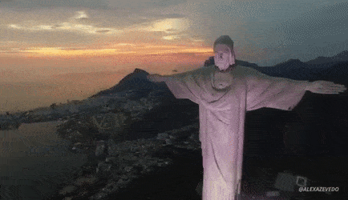

ESTRADA DO MORRO DO CORCOVADO
Essa estrada foi a primeira ferrovia do Brasil! A estrada foi inaugurada em 1884, por Dom Pedro II, então Imperador do Brasil, na época. Ou seja, a estrada é mais antiga que o próprio monumento do Cristo.

Você saberia nos dizer qual o ponto turístico mais famoso na cidade do Rio de Janeiro? Sim, é o Cristo Redentor, no alto do Morro do Corcovado. Esse é o monumento brasileiro mais conhecido no mundo! Não deixe de conhecer toda a história e detalhes sobre o Cristo Redentor no Rio de Janeiro. Leia nosso texto.
A estátua do Cristo Redentor está situada no Parque Nacional da Tijuca, área de preservação ambiental na cidade. O monumento está a 710 metros acima do nível do mar e a vista do alto do morro é impressionante. É necessário subir 220 degraus para alcançar os pés do Cristo.
O Cristo Redentor foi eleito uma das Sete Maravilhas do Mundo, em 2007, pela New 7 Wonders Foundation.
Essa estrada foi a primeira ferrovia do Brasil! A estrada foi inaugurada em 1884, por Dom Pedro II, então Imperador do Brasil, na época. Ou seja, a estrada é mais antiga que o próprio monumento do Cristo.
O monumento teve maior parte de sua construção feita no Brasil, a cabeça e mãos no entanto, foram
modeladas
em Paris, na França. Para o corpo do Cristo foi utilizada pedra-sabão, cortada em triângulos.
Os pedaços de pedra foram colados em tecido e depois “pastilheiros” foram aplicando as milhares de partes na
estátua.
A estátua do Cristo Redentor foi inaugurada em 12 de outubro de 1931, com a presença de milhares de peregrinos de todas as partes. O Cristo completou 89 anos de existência e continua encantando visitantes de todo o mundo.
